My Role
I designed My eXp and MIRA end to end, from the problem and the information architecture to the UI, the component patterns, and MIRA’s conversational experience.
This is UX design work I did as a Senior UX / Product Designer at eXp Realty on the My eXp agent portal. MIRA and some other areas are shown as earlier prototype designs. I used Figma for wireframes, UI, and components; ChatGPT and Claude to synthesize research inputs, explore flows, and draft UX copy; and Lovable for the AI-assisted working prototype.
Frame the product
Set the vision of one personal platform, the goals (personal, legible, actionable, consistent, conversational, demo-ready), and the Now / Next / Later scope.
Start from the agent’s day
Centered the work on daily jobs and the questions agents need answered, then clustered those inputs into pain-point themes.
Design MIRA as a product surface
Intents, suggested prompts, insight cards, confirmation, and recovery — not a help widget that only answers FAQs.
Make dense business data readable
Home, capping, RevShare earnings, organization reporting, Team, and Agent Desk, each answering a specific question.
One set of patterns
KPI tiles, data tables, drawers, tabs, step flows, and the MIRA panel, so a pattern learned on one page works everywhere.
A stateful walkthrough
Built a clickable Lovable prototype of 71 screens and states, since updated to 77, with 32 screens in the current design. Demo Config switches live scenarios.
Focus areas: product strategy, UX research, AI experience design, conversational UX, dashboard design, workflow automation, and design systems. Portfolio
All names, figures, and transactions shown are demo data and fictional. Shared for portfolio purposes. eXp and My eXp are trademarks of their respective owners.
Design Process
End-to-end, from discovery to delivery.
My eXp is the main product ecosystem: the portal where an agent runs their business. MIRA is its intelligent AI layer, available across the whole ecosystem rather than living in one corner of it. MIRA floats on every screen, with suggested prompts, chat history, insight cards, and AI chat inside Contact eXpert Care.
My eXp
One place where an agent can see goals and capping progress, understand revenue share, run transactions, grow through mentorship, and find documents or help.
MIRA
A conversational assistant that answers questions about the agent’s business, surfaces insights, and helps them get things done. The same assistant powers support in Contact eXpert Care.
Information architecture
The sidebar groups the platform into three areas. A persistent header holds notifications, the account menu (with Demo Config), and Contact eXpert Care. MIRA floats on every screen.
My Desk
- Home — Customize Home Screen, Getting Started checklist
- Broker Center — State Mentors table, mentor profile drawer
- Agent — Dashboard, Agent Production Details, ICON Program, Custom Service Fees
- Documents — Year-End, Downloads, Documents Portal
- Events Calendar
Business & Growth
- Team — Dashboard, Team Reconciliation, Roster
- RevShare Earnings — My Earnings (Revenue Share), My FLA with Unpaid / Expected / Last Paid, Revenue Share Group
- My Organization — Overview Dashboard, Off-boarding Overview, Detail Report and downloads
- Agent Desk — transaction workspace with seven tabs
- Mentor Program — apply, mentor, and mentee views
Resources
- Tools
- Knowledge Base
- Contact eXpert Care — call, AI chat, and email
Global
- Notifications — Activity Feed and Recognition, filters, detail drawer
- Account menu — Personal Details, Settings, Demo Config
- MIRA assistant
Now, next, and later
Now · in the prototype
77 screens and states (32 in the current design): Sign-in and onboarding (2), Home and personalization (14), Notifications and account (8), MIRA and help (4), Broker Center (4), Agent (9), Documents (2), Team (4), Training (1), RevShare Earnings (13), Agent Desk (9), Mentor Program (7).
Next
Remaining routes (Events Calendar, Tools, Knowledge Base, Downloads), mobile layouts for frequent on-the-go tasks, and an accessibility review.
Later
Deeper MIRA capabilities grounded in the agent’s own data, and task execution with human confirmation.
Problem
Agents were spending the day finding information instead of acting on it.
How might we give an agent one personal, consistent platform that answers “where do I stand, and what should I do next?”, and let them get there by simply asking?
An agent’s working day spans many questions: how close they are to their goals and their cap, what they have earned in revenue share and when they will be paid, which deal needs attention, who their mentor is, and where to find a document or get help. When those answers live in separate tools and dense tables, the work is hunting, not deciding.
The product vision: a unified real estate platform that combines the My eXp agent experience with MIRA, an intelligent AI assistant that helps agents access information, complete tasks, navigate workflows, and make better business decisions through natural conversations.
Scattered answers
Goals, cap, revenue share, deals, mentorship, documents, and help sit in different places.
Dense, hard-to-read data
Earnings and the revenue share organization are hierarchical and table-heavy.
No clear next step
It isn’t obvious which deal or task needs attention right now.
Inconsistent patterns
When every area behaves differently, the interface has to be relearned page by page.
Product goals
- Personal: a Home that reflects each agent’s own goals and progress
- Legible: make complex earnings and organization data easy to read
- Actionable: surface what needs attention next
- Consistent: one set of patterns across every area
- Conversational: let agents ask MIRA instead of hunting through menus
- Demo-ready: show many user states without separate accounts
Stakeholders
The people the portal has to serve, and how the design work was aimed at each of them.
| Stakeholder | What they need | How I worked with them |
|---|---|---|
| Real estate agents | One place to see goals, cap, earnings, deals, documents, and help, and a clear next step. | Designed Home, My Earnings, Agent Desk, Documents, and help around the questions in their working day. |
| Mentors and mentees | A path to find a mentor, apply to become one, manage requests, and follow training. | Designed a journey for every mentorship state: Find Your Mentor, the application, the mentor dashboard, and the mentee view. |
| Team leaders | Readable team production and a revenue share organization they can report on. | Designed the Team dashboard, Organization Reporting, and the Revenue Share Group report, including background downloads. |
| Brokerage reviewers | See realistic journeys in a demo without standing up separate accounts. | Built Demo Config into the account menu — mentor modes, capping scenarios including CAP REACHED, ICON toggles, country, and FLQA — so one prototype can switch live. |
| eXpert Care support | Agents can reach a person or get an answer without a dead end. | Kept call, AI chat, and email on Contact eXpert Care, and used the same MIRA panel for AI chat and for insights. |
| Engineering and QA | Screens, states, interaction behavior, and conversation rules they can build and test. | Specified the handoff package: Figma screens and states, the Lovable prototype as interaction reference, notes for drawers, tabs, tables, and multi-step flows, MIRA specs, Demo Config scenarios, and accessibility notes. The case study does not record a handoff date. |
End Users
A real estate agent who runs their business from the portal every day: tracking goals and capping, checking revenue share and payouts, moving transactions forward, working with a mentor, and finding documents or help.
New agent
Looking for a mentor. Home leads with Getting Started, a Find Your Mentor card, and a countdown. They compare mentor cards and profiles, or let the system choose.
Agent who just capped
Capping is a milestone. The CAP REACHED state turns goals green, adds goal-reached badges, and pairs with the Recognition tab.
Certified mentor
Manages mentees and pending requests (Accept / Decline) and keeps a public profile from the mentor dashboard.
Active mentee
Follows their mentor’s training. The mentee view shows the mentor, training materials, and progress.
Agent with a team
Reads team production and a revenue share organization: levels, cap percentage, payout status, and organization reports.
Anyone who needs help
Looks up a document or starts Contact eXpert Care by call, AI chat, or email. MIRA is one click away on every screen.
Research Methods
The framework centers on the agent’s daily jobs and the questions they need answered. Participant counts and verbatim quotes are not part of this write-up.
Questions before features
Mapped the working day to the questions agents actually ask: cap progress, what they earned and when they are paid, which deal needs attention, who their mentor is, and where a document or a person is. Key insight: answers were scattered, so agents spent effort finding information instead of acting on it.
Themes, with ChatGPT and Claude
ChatGPT and Claude supported synthesis, clustering inputs into five themes: scattered information, hard-to-read earnings, unclear next action, getting help, and growth and mentorship. Design decisions stayed with me.
A day, with a role for MIRA
Mapped six stages — start the day, check earnings, move deals, grow, get help, celebrate — to portal touchpoints and to the job MIRA is designed to do at each step.
Same criteria, three kinds of product
Compared brokerage portals, CRM and transaction tools, and AI assistants on one set of criteria: a unified view, legible earnings, next-action guidance, AI grounded in the agent’s own data, and human control.
Roles the design has to hold
The same prototype has to walk a new agent looking for a mentor, an agent who just capped, a certified mentor, a mentee, and an agent with a team. Demo Config makes three of those journeys switchable live.
Five tasks, results not yet reported
A test plan covers finding cap progress, the next payout, the deal that needs attention, asking MIRA about a GCI trend and pinning it, and choosing a mentor. Observe task success, time on task, errors, confusion, and trust in MIRA’s answers. Measured results are not in this case study.
Pain-point themes
| Theme | What it means for the agent | How the design responds |
|---|---|---|
| Scattered information | Answers about goals, cap, earnings, and deals are spread across tools. | One Home, one sidebar, and MIRA available on every screen. |
| Hard-to-read earnings | RevShare levels, payouts, and the organization are dense and hierarchical. | My Earnings, payout tabs (Unpaid / Expected / Last Paid), Revenue Share Group, and Organization Reporting. |
| Unclear next action | No single view of what needs attention today. | Agent Desk opens on the pipeline and a “Needs your attention” list. |
| Getting help | Finding a document or the right support channel takes effort. | Documents, plus Contact eXpert Care with call, AI chat, and email. |
| Growth and mentorship | Finding a mentor and tracking progress has many states. | Separate journeys for a new agent, an applicant, a mentor, and a mentee. |
Agent journey
A journey through a working day, mapped to touchpoints and to the role MIRA is designed to play. The last column is the pain theme that stage was designed against, not a quote from a session.
| Stage | Agent goal | Touchpoints | MIRA’s role (design intent) | Pain the stage answers |
|---|---|---|---|---|
| Start the day | See where I stand | Home: Getting Started, Capping Year, Scheduled Training | Summarize progress and what changed | Scattered answers; progress is hard to see in one place |
| Check earnings | Know what I earned and when I get paid | My Earnings, Unpaid / Expected / Last Paid, Revenue Share Group | Explain trends; start a payout with confirmation | Dense, hierarchical earnings |
| Move deals forward | Act on what needs attention | Agent Desk, Needs your attention, transaction workspace | Recommend the next action on a deal | No clear next step |
| Grow | Find or be a mentor | Mentor Program, Choose Mentor drawer, mentor dashboard | Guide through the right mentorship journey | Many mentorship states |
| Get help | Find a document or an answer fast | Documents, Contact eXpert Care (call, AI chat, email) | Answer or route to the right human channel | Help and documents take effort to find |
| Celebrate | Mark milestones | CAP REACHED state, Recognition tab | Highlight milestones and peers to recognize | Milestones pass without a recognition moment |
Competitive Analysis
Three categories agents already use, judged on the same criteria. This case study does not name specific products or publish a scored audit.
I looked at each category for a unified view of the business, legibility of earnings data, next-action guidance, AI grounded in the agent’s own data, and human control over important actions.
| Category | What I looked at | Gap the portal was designed against | Opportunity for My eXp + MIRA |
|---|---|---|---|
| Brokerage agent portals | Dashboards, earnings, and transaction views | Goals, cap, revenue share, deals, and help often sit apart, and earnings stay table-heavy, so the agent hunts for “where do I stand?” | A personal Home with Getting Started, Capping Year (GCI, Volume, Units, Revenue Share), training, and tiles the agent can rearrange. |
| CRM and transaction-management tools | Pipelines, checklists, documents, and tables | Strong as systems of record, weaker at naming the single next action and at keeping every fact about one deal in one workspace. | Agent Desk with “Needs your attention” and a transaction workspace: Overview, Contacts, Commission, Checklist, Documents, Activity, Comments. |
| AI assistants and copilots | Conversation design, grounding, actions, and confirmation | A general chat can answer a question. It is not grounded in that agent’s cap, earnings, and pipeline, and it can act without showing what will happen. | MIRA on every screen: suggested prompts, chart insight cards that pin to the dashboard, and Review, Confirm, Done before anything that changes money or data. A person is still available in eXpert Care. |
User Personas
Representative personas based on the agent roles and journeys this case study already describes. They are not transcripts of named research participants.
Avery Chen, new agent
First 90 days. Getting Started is still open, and a mentor has not been chosen. Goals: finish onboarding, pick a mentor, and understand Capping Year. Frustrations: training, documents, and mentor search live in different places, and a blank chat box does not show what MIRA can do. Needs the checklist on Home, the Choose Mentor drawer (compare profiles or let the system choose), and suggested prompts.
Jordan Hale, producing agent
An active pipeline and a cap still in progress. Goals: see cap progress, know Unpaid, Expected Next, and Last Paid, and act on the deal that needs attention. Frustrations: RevShare levels are hierarchical, and nothing says what to do today. Needs the Capping Year tile, My Earnings, Agent Desk’s “Needs your attention” list, and Get Paid Now with the fee and total shown before confirm.
Morgan Ellis, certified mentor
Responsible for mentees and for a public profile. Goals: see mentees, clear pending requests, and keep the profile current. Frustrations: mentorship has many states, and a request is easy to miss. Needs the mentor dashboard, Accept / Decline on pending requests, and profile view and edit.
Sam Patel, active mentee
Matched with a mentor and working through training. Goals: see the mentor, the materials, and progress in one place. Frustrations: growth tasks split across the relationship and the training calendar. Needs the mentee dashboard and Scheduled Training on Home.
Riley Okonkwo, team leader
A team and a revenue share organization. Goals: read Units, Volume, and Team Lead Split, understand the organization, and export a detail report. Frustrations: org data is dense, and a report can be too large to show on screen. Needs the Team dashboard, Organization Reporting (Overview, Off-boarding, Detail Report), and a download that finishes in Notifications.
Design Decisions
Each choice keeps the agent in context: a personal Home, legible earnings, one workspace per deal, and the same patterns everywhere.
A personalized Home that answers “where do I stand?”
Home is a modular set of tiles: a Getting Started checklist for new agents, Capping Year progress with GCI, Volume, Units, and Revenue Share, Scheduled Training, Achievements, What’s New, and Upline Partners. Home changes with the agent’s stage. The Getting Started checklist leads for new joiners and drops away after the first 90 days.
Customize Home Screen lets each agent drag tiles into the order they want, with Reset to Default, Cancel, and Save Changes, and a short first-run overlay that explains how. Trade-off: customize mode is another state to learn, so the overlay and Reset to Default are the way out.
Before: a light sidebar and a mission-control layout of goal KPIs (Homes Closed, Commission, Sales Volume), Weekly Quests, and a capping ring. After: dark navy navigation, a full-width announcement banner, and the modular tiles above. Source for the current Home: Home-Screens Figma file.


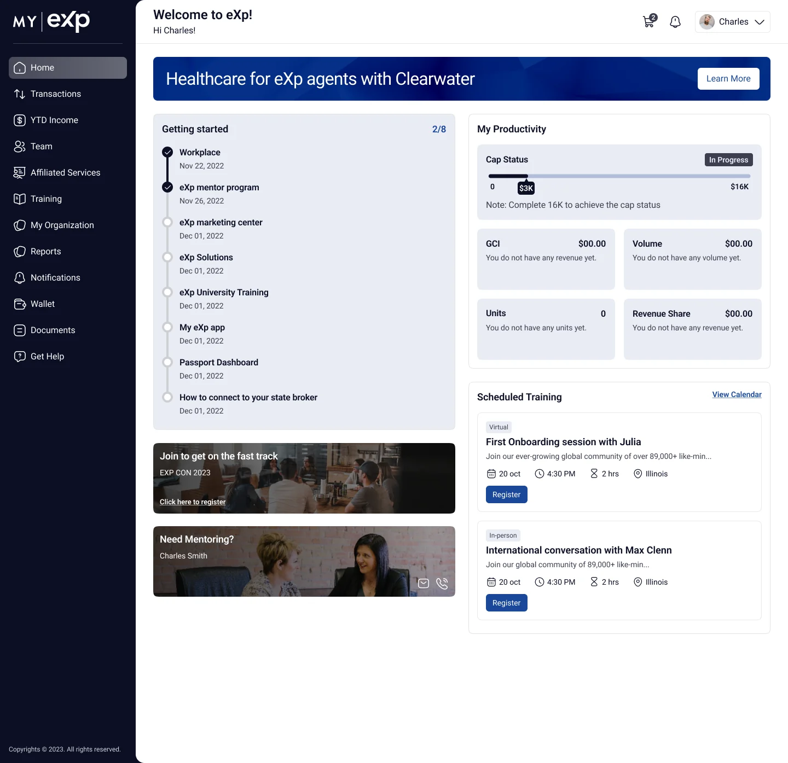


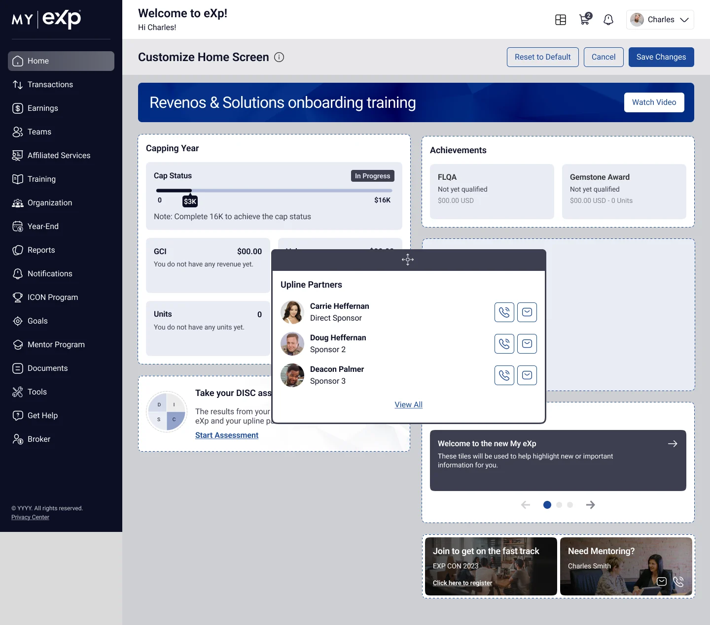
Capping progress as a moment, not a number
Capping is one of the most meaningful milestones for an agent, so it is a recurring visual thread: the Capping Year progress bar on Home, a year-by-year capping history timeline on the Agent dashboard, and a CAP REACHED celebration state that turns goals green and adds goal-reached badges. Trade-off: the celebration is a scenario state, not the everyday layout, so the default Home stays calm until the milestone is real.


RevShare, split into jobs an agent can finish
RevShare data is dense and hierarchical. I split it into clear jobs. My Earnings opens on Revenue Share with My FLA, My FLQA, My New Agents, and My Prospective Agents cards, a Revenue Share Group donut with agent counts per level, and Unpaid, Expected Next, and Last Paid amounts that each open an agent-level table. The Revenue Share Group report lists every agent with level, cap percentage, and amount, and a side panel for details.
Organization Reporting separates an Overview Dashboard (KPI tiles, year-to-date revenue share and volume, agent mix, and per-level charts), an Off-boarding Overview, and a Detail Report. Large reports download in the background and land in Notifications, with a clear state when a report is too large to display. Trade-off: more screens than one earnings page, and each screen answers one question instead of stacking every chart.
Current earnings, payout, group, and organization screens are from the Cosmo Transition and Organization Figma files.


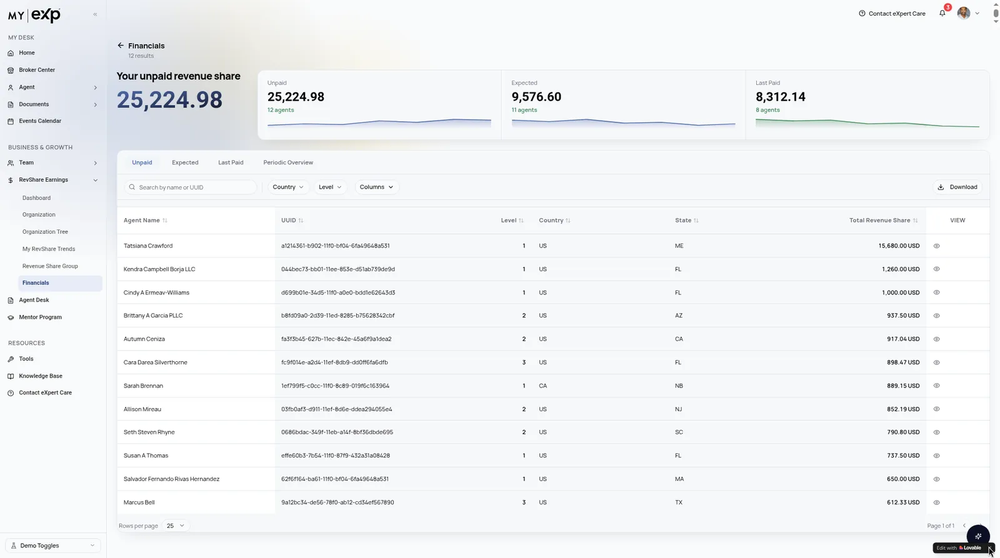
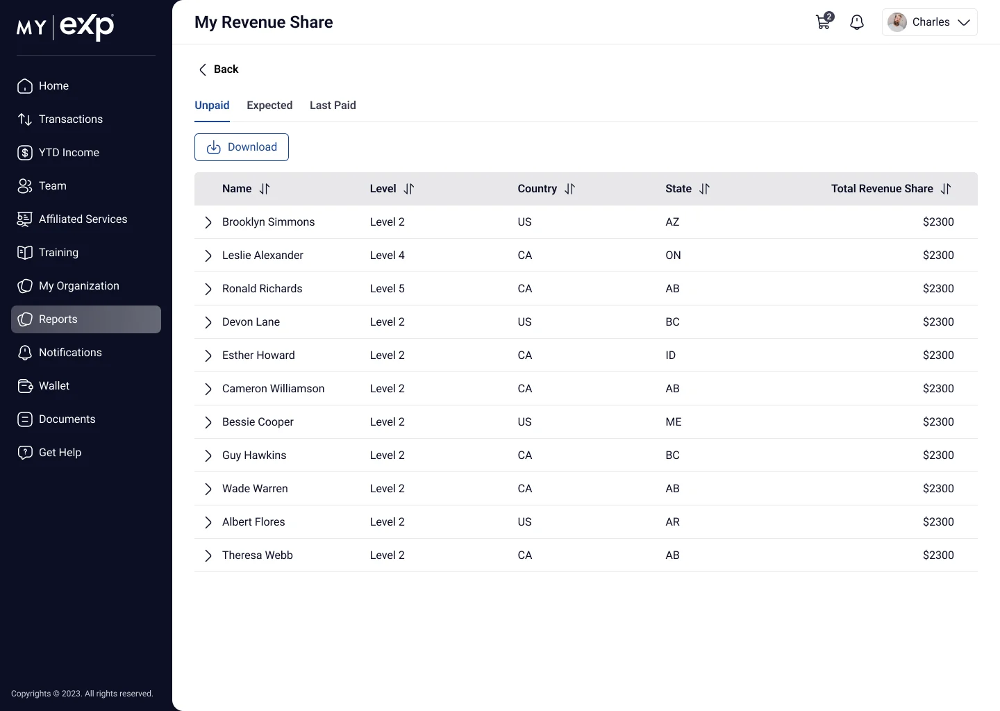


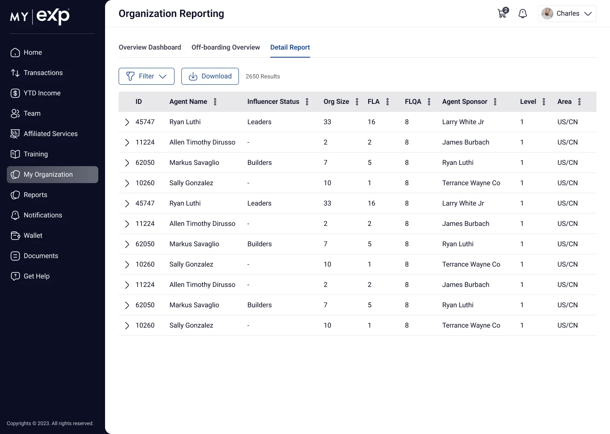
Agent Desk: one workspace per transaction
Agent Desk starts with the active pipeline and a “Needs your attention” list so the next action is obvious. Each transaction opens into a workspace with persistent key facts (agent, buyer, expected close, days on market, price) and tabs for Overview, Contacts, Commission, Checklist, Documents, Activity, and Comments. Trade-off: seven tabs are more structure than one long page, and they keep commission, documents, and comments from collapsing into a single dense view.


One table pattern
Much of the portal is tabular, so one data-table pattern covers it: search and filter chips, a column manager, Save View, Download, per-column search, pagination, and row click to open a detail drawer. Once an agent learns it, it works the same on State Mentors, Production Details, Team Reconciliation, Revenue Share Group, and My Mentees. Trade-off: the column manager and Save View are more controls than a plain table, and they remove the need to relearn each report.


Team dashboard, simplified to the numbers that move
Before: team production, onboarding agents, Top Agents tabs, and Mega Team re-qualification progress. After: Units, Volume, and Team Lead Split tiles with pending values, a currency selector and Filter, and Top Agents tabs for Units Sold and Highest Volume. Source: Cosmo Transition Figma file. Trade-off: some of the earlier re-qualification detail is not on this dashboard; the first screen stays readable.


Notifications with context
Notifications became a full page with an Activity Feed and a Recognition tab, quick date and type filters, and a detail drawer that explains the event in context (capping details, ICON status, top transaction). Recognition items include a send-a-gift action so agents can celebrate peers. The current design simplifies the list: one Filter button, category tags, and inline actions such as “Say Congrats!” and “Invite to a Training.” Source: Cosmo Transition Figma file. Trade-off: the current list drops some of the earlier filter chrome in favor of actions on the row.

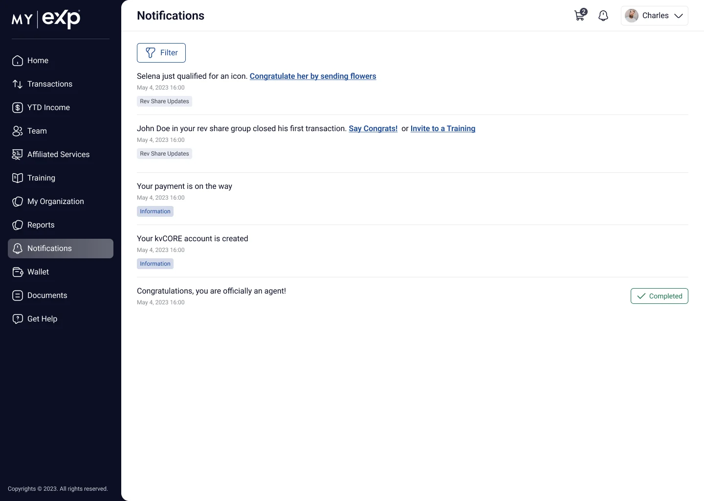

Mentor Program flows for every role and state
Mentorship has many states, so it is a set of journeys. A new agent sees a Find Your Mentor card with a countdown, compares mentor cards and profiles, or lets the system choose. Agents apply to become mentors through a prefilled multi-step application. Certified mentors get a dashboard for mentees, pending requests (Accept / Decline), and their own public profile. Mentees see their mentor, training materials, and progress. Key flows stay in context: the application is Start, prefilled from profile, multi-step form, Submit. Trade-off: more screens than a single Mentor page, and each role lands in the right state instead of a generic form.


Demo Config, so one prototype tells several stories
To demo realistic journeys without fake accounts, Demo Configuration sits in the account menu: mentor modes, capping scenarios (including CAP REACHED), ICON toggles, country, and FLQA states. Switching a scenario updates the live UI. A sidebar Demo Toggles menu covers the common switches during a walkthrough. The same prototype can show a new agent looking for a mentor, an agent who just capped, and a certified mentor in one session. Trade-off: demo controls are a designer and stakeholder tool, not an agent-facing feature, so they live in the account menu rather than in the everyday nav.


Prototype
A clickable, stateful prototype, not a stack of static frames. Open all 77 screens.
Building the prototype in Lovable meant drawers, drill-downs, multi-step flows, and MIRA’s panel could be tested as real behavior. The walkthrough links screens the way the app does. Arrow keys move next and previous. On earlier-prototype screens, hotspots are available and H shows them. MIRA’s answers in the prototype are scripted to demonstrate the experience.
Understand
Framed the agent’s daily questions and jobs, and synthesized research inputs into goals.
Information architecture
Grouped the platform into My Desk, Business & Growth, and Resources, plus a global header and MIRA.
Wireframe
Sketched layouts and flows for Home, RevShare, Agent Desk, the Mentor Program, and MIRA.
Visual UI and components
KPI cards, data tables, drawers, and tabs, with a consistent type, color, and spacing hierarchy.
Prototype
Built 71 screens and states as a stateful app, with Demo Config to switch scenarios live. The walkthrough now holds 77, including the current-design updates.
Iterate
Tested drawers, drill-downs, and multi-step flows as real behavior, and refined layout and UX copy.
Flows that keep the agent in context
Get Paid Now
Review → Verify → Confirm → Done. The fee and the total are shown before any commitment. Organization Tree is the same idea of staying oriented: Level → Drill in → Up one level, with a depth breadcrumb.
Mentor application
Start → prefilled from the profile → multi-step form → Submit. Drawers, not new pages, for choosing a mentor and reading a profile.
Report downloads
A large Detail Report prepares in the background and is delivered to Notifications. If it is too big to display, the page says so instead of failing silently.
MIRA, beyond a chatbot
MIRA is designed to go beyond a traditional chatbot. Rather than a help widget that answers FAQs, it is an assistant that understands what the agent is trying to do, uses the context of their business, and helps them act, with the agent always in control.
In the prototype
- Floats on every screen, one click away from Home and every other area
- Opens with a greeting, suggested prompts (GCI trends, listing velocity, active pipeline), and chat history
- Answers with chart insight cards that can be pinned to the dashboard
- The same MIRA panel powers AI chat in Contact eXpert Care, so help and insights share one entry point
Conversation principles
- Start with prompts, not a blank box
- Show, don’t tell: a short summary and a chart insight card
- Pin an insight card so the answer is useful later
- Chat history keeps earlier questions close
- Plain language: UX copy drafted with ChatGPT and Claude, then edited for tone
- Always a way out: call or email in Contact eXpert Care


Labels mark how far each capability got. Prototyped means it is in the prototype. Designed pattern means the interaction principle is specified. Roadmap means it is planned, not built in this prototype.
Natural-language conversations
Agents ask in their own words, starting from suggested prompts such as GCI trends, listing velocity, and active pipeline.
Understanding agent intent
Requests are framed as intents — get an insight, find something, do a task, get help — so MIRA can respond in the right way.
Context-aware responses
Answers take into account where the agent is and what they are looking at, and come back as chart insight cards rather than walls of text.
Accessing the agent’s own data
Answers draw on the agent’s own goals, earnings, pipeline, and documents.
Assisting with business workflows
MIRA hands the agent into existing flows such as Get Paid Now, a transaction checklist, or the mentor application, instead of replacing them.
Recommending next actions
Like “Needs your attention” on Agent Desk, MIRA suggests what to do next and links to it.
Task execution through AI agents
MIRA prepares and runs multi-step tasks on the agent’s behalf.
Human confirmation and control
Important actions follow the Get Paid Now model: show exactly what will happen, then Review, Confirm, and Done. Nothing important happens without the agent’s approval. Trade-off: the confirm step adds a beat, and it keeps money and data changes from firing on their own.
Error handling and recovery
When a request is unclear or fails, MIRA asks a clarifying question, offers options, or routes to a human in Contact eXpert Care.
AI workflows
Insight
Ask about GCI trends, get a chart insight card, and pin it to the dashboard.
Support
Start AI Chat in Contact eXpert Care. The same MIRA panel answers.
Navigate
Ask for a document. MIRA links to the right place in Documents.
Act
Ask to get paid. MIRA opens Get Paid Now with the fee and total. The agent confirms.
Next step
MIRA flags a deal that needs attention and prepares the next task for approval.
Conversation flow
Insight-only answers end at the response. Anything that changes data or money goes through Confirm. Unclear, declined, or failed requests recover and return to intent.
Usability test plan
The case study records the plan, not measured results. Core tasks:
- Find how close you are to your cap on Home
- Find what you will be paid next on My Earnings
- Find the deal that needs your attention in Agent Desk
- Ask MIRA about your GCI trend and pin the answer
- Find and choose a mentor
What to observe: task success, time on task, errors and points of confusion, and trust in MIRA’s answers.
UI Kit
The project’s own visual language, shown as a specimen. These colors are sampled from the product screens in this case study. The page around them uses the shared portfolio palette.
Color
#0C0F24
#022177
#486EAF
#4B6AA0
#3D65AC
#3D3F50
#D3DAEA
#EAEEF6
#5CAE85
#545664
#0A0E20
#FFFFFF
Navy is the current sidebar and wordmark ground. Banner blue is the announcement on Home. Primary card blue is My FLA; the darker slate card is My FLQA; the pale tile is My New Agents and My Prospective Agents. Green is reserved for meaning, including goals turning green in the CAP REACHED state. The MIRA panel color is from the earlier assistant prototype.
Type hierarchy
The product UI is a neutral sans. Key values lead. Labels and table text sit behind them. The scale below shows that hierarchy; it is not a claim about a licensed font file.
Welcome to eXp!
Capping Year
$7,600.00
Unpaid · calculated but not paid out
Label and table data stay secondary
Where type works
- Greeting and page title first, then the section title inside a tile
- KPI values (GCI, Volume, Units, Revenue Share, unpaid amounts) larger than their labels
- Persistent key facts at the top of a transaction: agent, buyer, expected close, days on market, price
- Status and payout rows readable at a glance: Unpaid, Expected Next, Last Paid
Components
KPI tiles
Capping progress, GCI, Volume, Units, and Revenue Share. Getting Started uses a checklist; Capping Year uses a progress bar plus four value tiles.
Data table
Search, filter chips, column manager, Save View, Download, per-column search, pagination, and row click to a drawer.
Drawers and side panels
Agents, notifications, transactions, and mentors open beside the page, so context is not lost.
Tabs
Transaction workspace tabs, Notifications (Activity Feed and Recognition), and earnings tabs (Unpaid, Expected, Last Paid).
Step flows
Mentor application, Get Paid Now (Review, Verify, Confirm, Done), and background report downloads.
MIRA panel
Greeting, suggested prompts, chat history, and insight cards that can be pinned. The same panel is the AI chat in Contact eXpert Care.
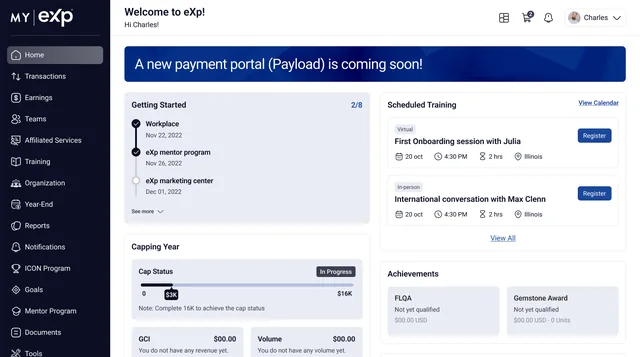
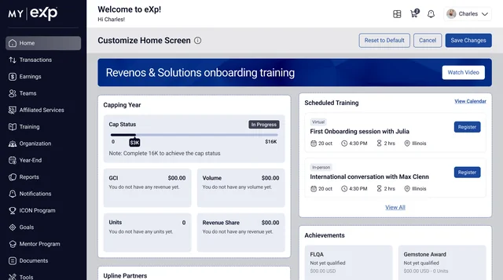
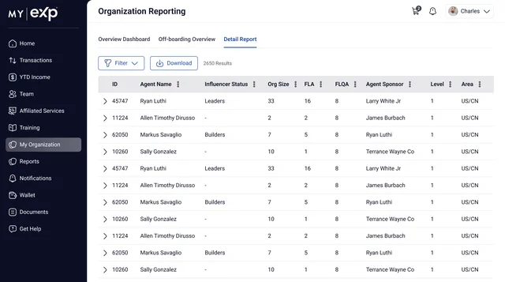


States
- Empty, filtered, and drill-down states, including “report too large to display”
- Celebration state for CAP REACHED
- Customize Home Screen with Reset to Default, Cancel, and Save Changes
- Pending mentor requests with Accept / Decline
- Scenario switches in Demo Config that update the live UI
Final Design
All 77 screens and states. Current means the latest Figma design files. Earlier means the previous prototype, kept where no updated design exists yet. Each one opens in the walkthrough.
Click through all 77 screens. Screens marked Current: 32. The rest are the earlier prototype.
Sign-in & onboarding · 2 screens
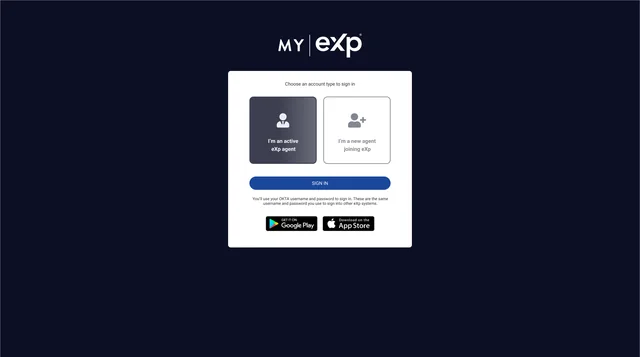
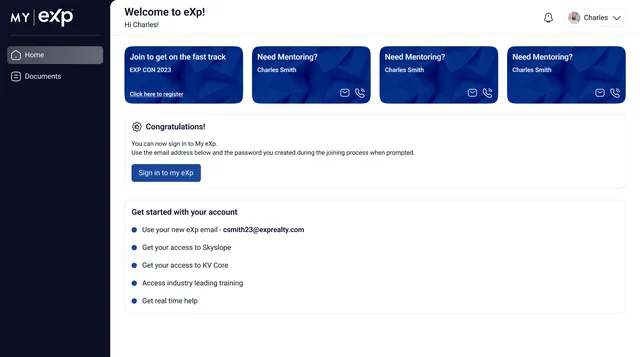
Home & personalization · 14 screens
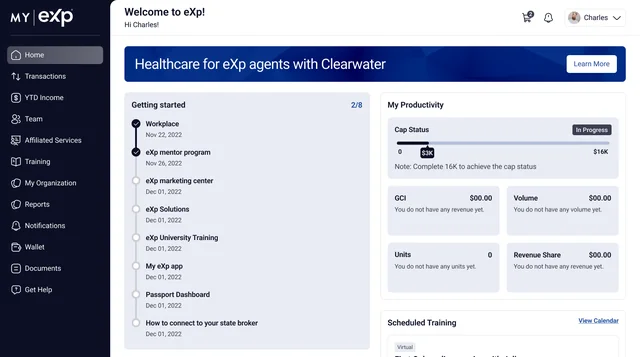
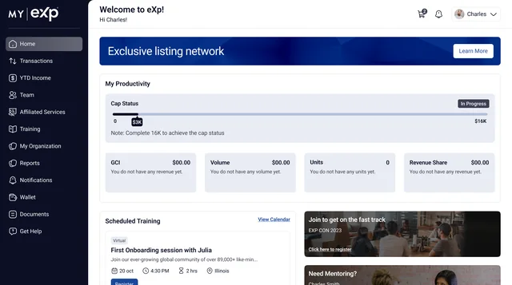
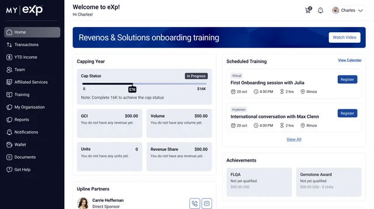
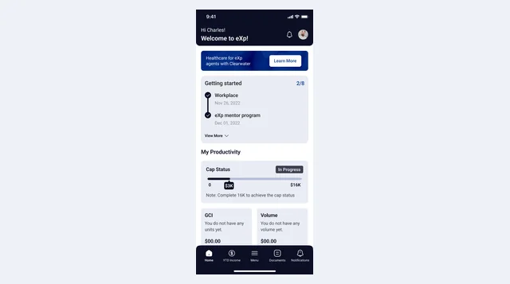
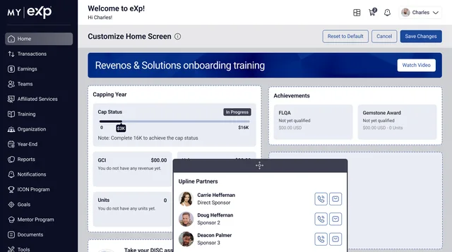
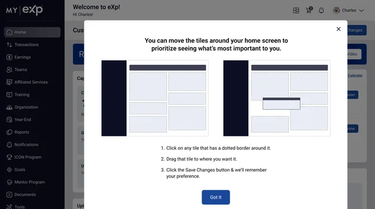
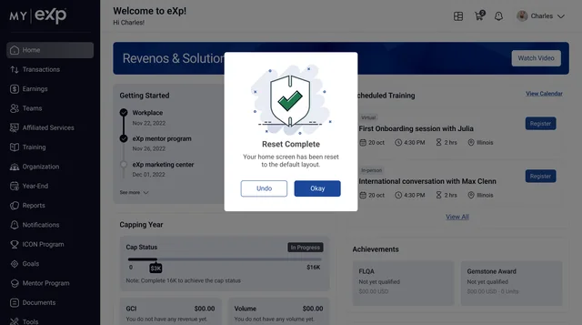


Notifications & account · 8 screens
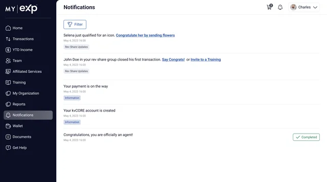
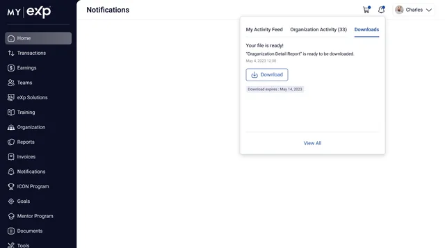

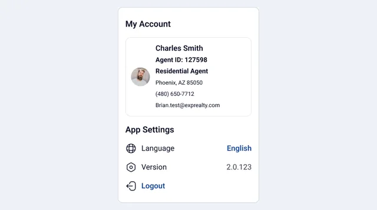


MIRA & help · 4 screens


Broker Center · 4 screens


Agent · 9 screens


Documents · 2 screens

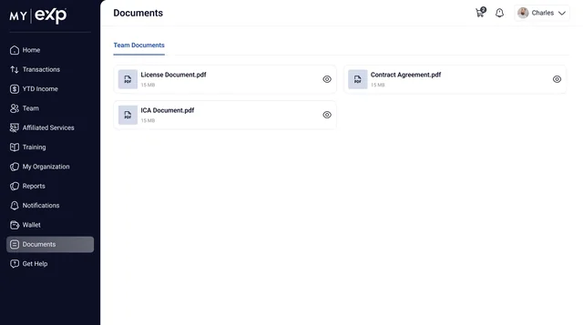
Team · 4 screens
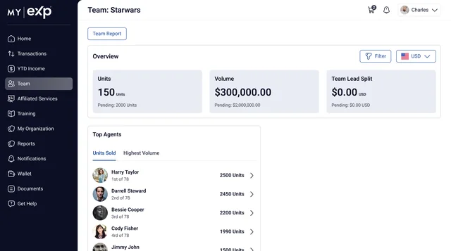
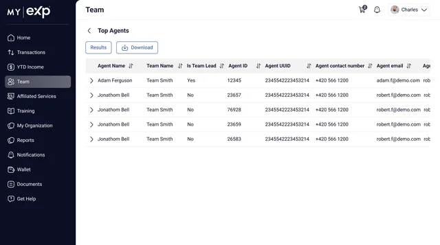

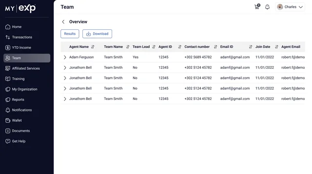
Training · 1 screen
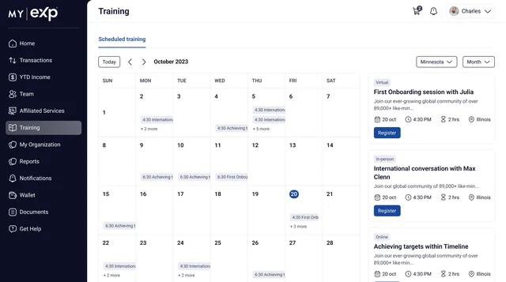
RevShare Earnings · 13 screens
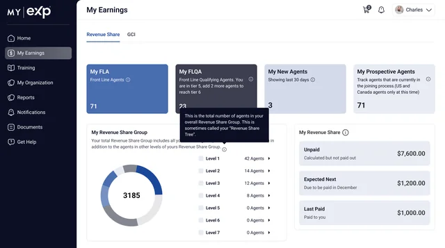
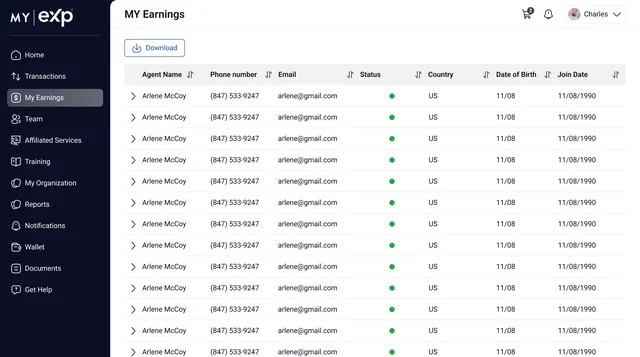
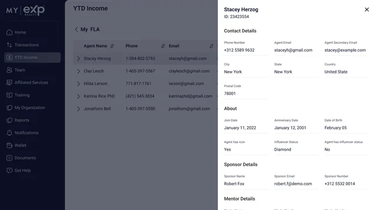
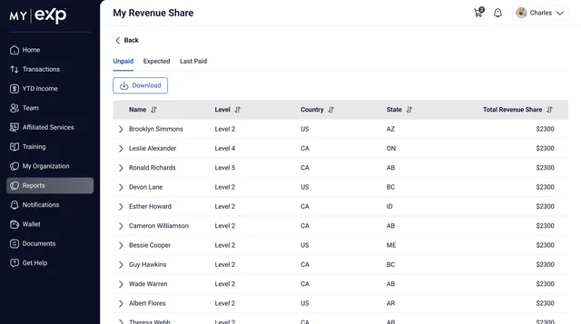
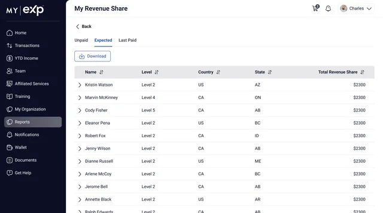
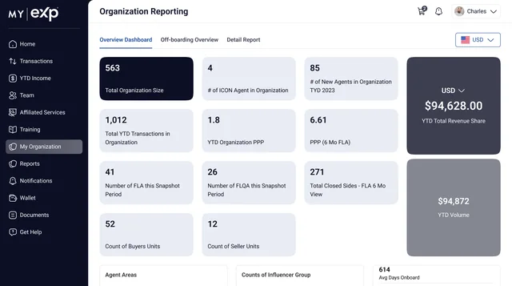
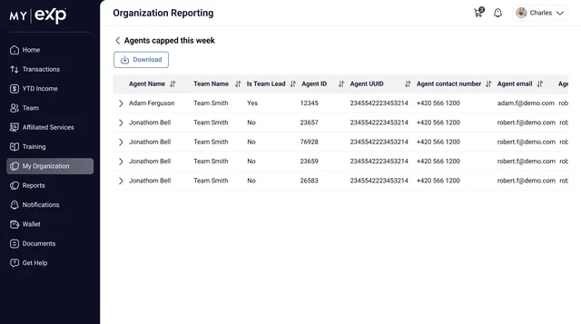
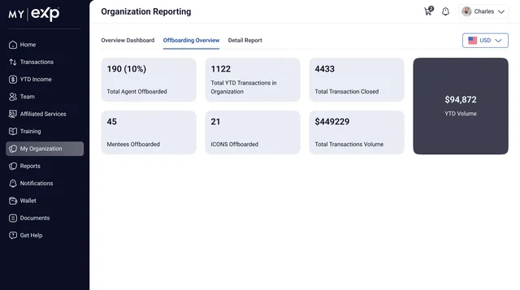
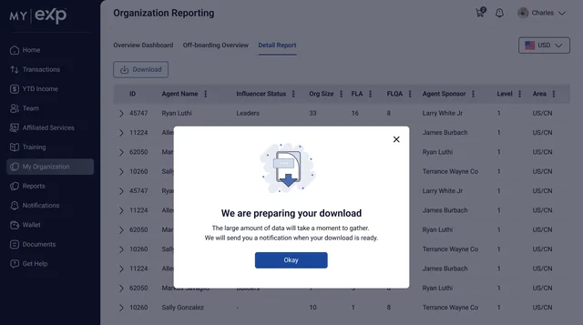
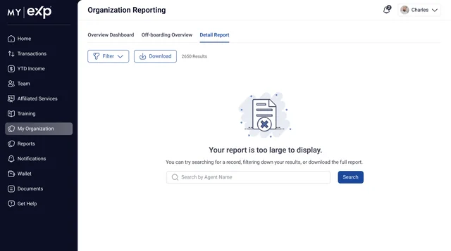
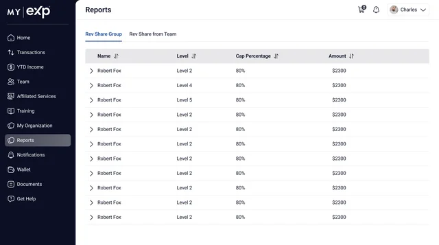
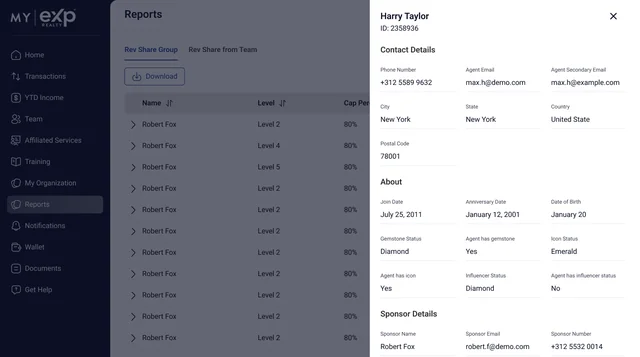
Agent Desk · 9 screens


Mentor Program · 7 screens


Outcome
What the work produced, what it taught, and what is still ahead. No business-impact numbers were recorded in the source case study.
What shipped in the prototype
- A stateful Lovable prototype, first built as 71 screens and states, now a walkthrough of 77 with 32 brought up to the current design
- One MIRA assistant across the platform: the same panel serves insights and Contact eXpert Care
- One table pattern reused on five data-heavy pages
- Demo Config, so one prototype can tell the story of a new agent, an agent who just capped, and a certified mentor in the same session
Handoff package
- Figma screens, components, and their states
- The Lovable prototype as a reference for real interaction behavior
- Interaction notes for drawers, tabs, tables, and multi-step flows
- MIRA conversation specs: intents, response formats, confirmation steps, and error and recovery states
- Demo Config scenarios for QA and stakeholder review
- Accessibility notes for color, contrast, and keyboard flows
Learnings
Working across Figma and Lovable changed how I design. Figma gave a clear structure and a shared set of components. Building those designs in Lovable with AI assistance made it possible to move from idea to a working, stateful experience quickly, and to test drawers, drill-downs, and multi-step flows as real behavior instead of static frames.
Designing MIRA taught me that an AI assistant is a product surface of its own. It needs intents, response formats, confirmation, and recovery designed as carefully as any screen. ChatGPT and Claude were useful thinking partners for exploring flows and tightening UX copy, while the design decisions stayed mine.
Demo Config turned out to be one of the most useful design tools in the project. One prototype can tell the story of a new agent looking for a mentor, an agent who just capped, and a certified mentor, live in the same session.
Future roadmap
- Usability testing with agents on Home, RevShare, Agent Desk, and MIRA
- Complete the remaining routes: Events Calendar, Tools, Knowledge Base, Downloads
- Mobile layouts for the most frequent on-the-go tasks
- Accessibility review of color, contrast, and keyboard flows in charts and tables
- Deeper MIRA capabilities grounded in the agent’s own data
- MIRA task execution through AI agents, with human confirmation for important actions
Shared for portfolio purposes. Demo data only: all names, figures, and transactions are fictional. eXp and My eXp are trademarks of their respective owners.
Metrics
Counts of the design work, as stated in this case study. No product-usage or business KPIs were measured here, so none are shown as targets.
The five pages that share the table pattern are State Mentors, Production Details, Team Reconciliation, Revenue Share Group, and My Mentees. The 71-screen count is the Lovable prototype before the current-design update; the walkthrough now holds 77, of which 32 are the current design.